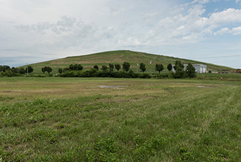

The closest thing to a visible landmark in the American Bottom is the 20-story Milam Landfill. Nearing its US Environmental Protection Agency-mandated maximum eight of 225 feet, the landfill accepts over 2,800 tons of garbage per day from St. Louis and sites as far away as Kansas, Ohio, and Iowa. The trash heap covers 176 acres and consists of 65%–70% St. Louis trash. A landfill has occupied the site since 1984, but in 1990 Waste Management purchased and expanded the scale of operations. The site is one of the largest methane gas-to-energy plants in the country. As anaerobic bacteria break down the organic garbage, methane is released and vented through 54 wells and six miles of collection pipes to a gas-recovery plant. A non-descript beige building houses the mainframe adjacent to three 16-cylinder diesel engines that transform 1.2 million cubic feet of gas per day into 2,400 kilowatts per hour of electricity. The electricity produced by the methane is used by the landfill while excess is sold to the AmerenUE grid. The site is surrounded by wetlands choked with phragmites thriving in the nutrient-rich waters and by the expanse of Horseshoe Lake.